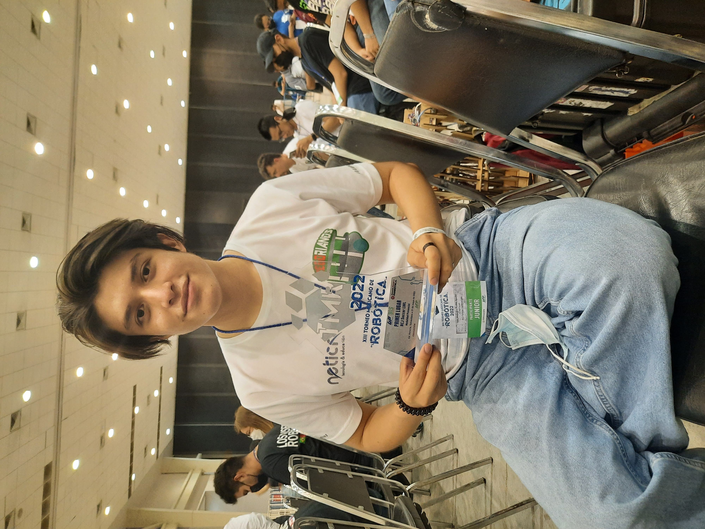
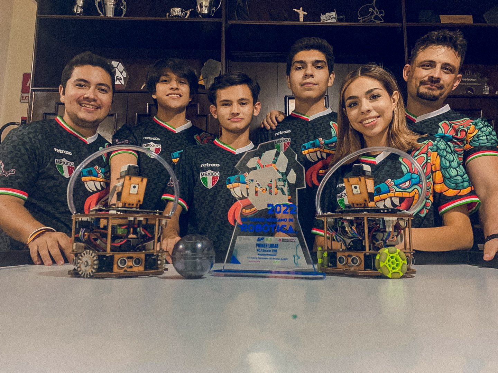
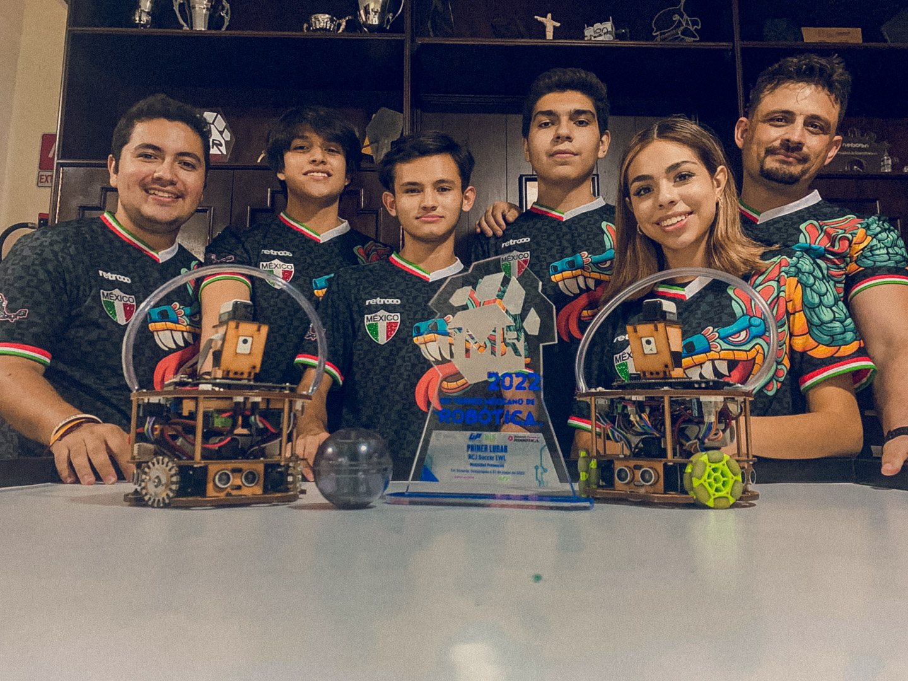

Alex Puebla's Resume

Sumary
This is a resume of my career, my relevant skills, work experience and awards and certifications
that matter to the job that I'm applying for.
Education
- British institute: From 6th to 3rd grade of secondary school
- CETI: 4 years and a technical degree in Automatic Control
- Currently Studying a software developer career also in CETI.
Job Experience
- CCTV installing, configuring and mantaing.
Skills
- Programming: PLC, Python, C++, HTML.
- Tools: KiCad, SOLIDWORKS (Basic).
- Electronics Knowledge: Diagrams, electrical control, fault analysis.
- PLC Programming: Experience in programming Programmable Logic Controllers (PLCs).
- Programming Tools: Proficient in LGOs and TIA Portal.
- Programming Languages: Python, C++, HTML.
- Electronic Design Tools: KiCad.
- Measurement Tools and Equipment: Proficient in using calipers, multimeters, and oscilloscopes.
- Manual Tools: Skilled in using screwdrivers, pliers, wrenches, and other precision instruments for assembly and maintenance.
- Electronics Knowledge: Electrical diagrams, electrical control, analysis, and troubleshooting.
Awards and certifications
Since little, I participated in different robotic tournaments gaining experience
at programming and electronics, recently since 2022 me with my robotics team won the national tournament,
repetedly, and went to the Robocup in Thailand and in France.
You can watch all of our photos and robots here in our instagram page: gregorianos_gdl

 
